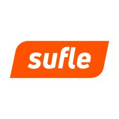

Simplifying Terraform Infrastructure Management
SREday London Q3 2025
Stalk me or connect with me
Quick overview for context
Core concepts, configuration, and best practices
Building a multi-environment setup with Terragrunt
Questions, discussion, and next steps
You might know this if you're already familiar with Terraform!
Terragrunt is a thin wrapper around Terraform that provides extra tools for:
| Aspect | Terraform | Terragrunt |
|---|---|---|
| Configuration | Verbose, repetitive | DRY, reusable |
| Remote State | Manual setup | Automatic generation |
| Multi-Environment | Complex | Built-in support |
| Dependencies | Limited | Advanced dependency management |
Terragrunt automatically handles the execution order!
terragrunt plan → Same as terraform plan, but with Terragrunt featuresterragrunt apply → Apply changes with dependency resolutionterragrunt run-all plan → Run plan across all modules in directoryterragrunt run-all apply → Apply all modules in correct orderterragrunt destroy → Destroy infrastructureterragrunt validate → Validate configurationterragrunt graph-dependencies → Visualize dependenciesDemo Gods, please help me! 🙏
You know demos never work as expected...
If the demo fails, we have a backup video! 📹
brew install terragruntterragrunt.hclterragrunt plan and terragrunt applyResources:
Slides & Demo Code
Connect with me
Questions & Discussion
Let's chat about Terragrunt, AWS, or anything cloud! ☁️
github.com/ceydaduzgec | linkedin.com/in/ceydaduzgec